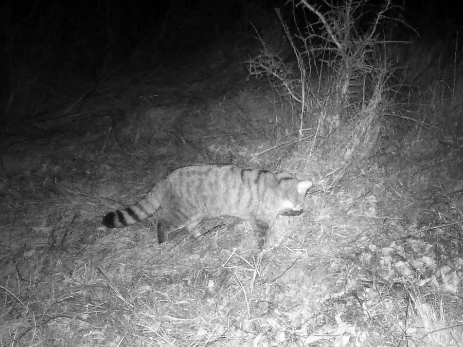

哺乳动物 · 动物界
欧洲野猫 Felis silvestris

家猫的野生近亲，体形比家猫粗壮，尾粗而末端钝圆、带黑色环纹，分布于欧洲、西亚与非洲，是研究猫类驯化的重要参照。
- 分类
- 门脊索动物门纲哺乳纲目食肉目科猫科属猫属
- 栖息环境
- 森林、灌丛、草原边缘、山地岩区与农田交界处
- 地理分布
- 欧洲大部、西亚、中亚及非洲北部，苏格兰等地有孤立种群
- 保护级别
- IUCN 无危（LC）；欧洲多国列为受保护物种
物种志
欧洲野猫体形比家猫更为粗壮结实，成年体重约 3–8 千克，体长 45–80 厘米，尾长约为体长一半，尾毛蓬松、末端钝圆并带数道黑色环纹，这是与流浪家猫区分的关键特征。毛色多为灰褐或黄褐，背部沿脊线有深色条纹，体侧横纹模糊，四肢有环纹，腹部浅白，面部有深色颊纹。
它们栖息于森林、灌丛、草原边缘与山地岩区，独居且领域性强，多在夜间和晨昏活动，捕食鼠类、兔类、鸟类、蛙和昆虫。猎物稀少时能长距离游荡，善于潜伏突袭，也会爬树和游泳。每年春季繁殖，孕期约 63–68 天，每胎 2–5 仔，幼猫约 5 个月开始独立。欧洲野猫与流浪家猫的杂交是纯种野生种群面临的主要威胁之一，苏格兰等地的纯血种群已十分稀少。
形态与习性
- 体长约 45–80 cm，尾长 25–40 cm
- 体重约 3–8 kg，雄性略重
- 食性鼠类、兔类、鸟类、蛙与昆虫
- 繁殖春季繁殖，孕期约 63–68 天，每胎 2–5 仔
- 寿命野外约 6–10 年，饲养下可达 15 年
- 鉴别特征尾粗、末端钝圆并具黑色环纹，体侧横纹模糊
- 主要威胁与家猫杂交导致基因污染，栖息地破碎与路杀
趣味知识
- 欧洲野猫的尾巴又粗又钝，末端像蘸了墨一样呈黑色。
- 它与家猫能自由交配产生可育后代，纯种野生血统因此被稀释。
- 在食物匮乏的冬季，它可一夜行走十余千米寻找猎物。